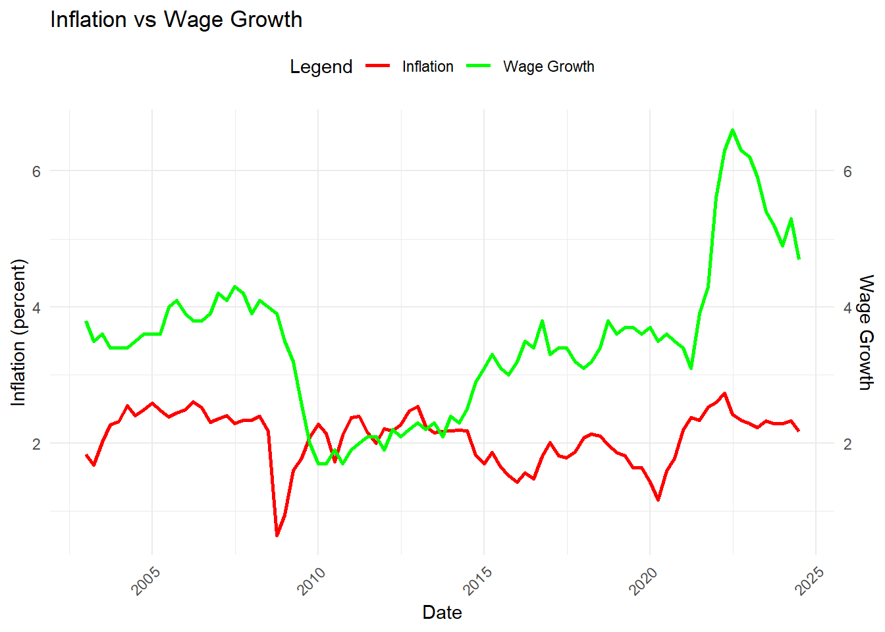

library(officer)
library(dplyr)
library(httr)
library(knitr)
library(readr)
library(stringr)
library(tidyr)
library(tidyverse)
library(ggplot2)
library(sf)
library(jsonlite)
library(kableExtra)mp04
Mini-Project #04: Monte Carlo-Informed Selection of CUNY Retirement Plans
The report presents an analysis of the two retirement plans offered to new faculty at CUNY: the Teachers Retirement System (TRS) and the Optional Retirement Plan (ORP). Each plan has its own benefits and risks. The project focuses on helping individuals make an informed decision about which plan would provide the best long-term financial outcome. Utilizing historical financial data and through a Monte Carlo simulation we can make data-driven decisions on the better plan.
#Task 1&2: Assigned the url and API Key
FED_API_KEY <- "b77f239b4ff5c406a3072cfdcaec8978"
FED_base_url <- "https://api.stlouisfed.org/fred/"
#Series ID for Wage Growth Data from FRED
growth_wage_series_id <- "FRBATLWGT3MMAUMHWGO"
growth_wage_url <- paste0(FED_base_url, "series/observations")
#TASK 3: Query parameters
params <- list(
series_id = growth_wage_series_id, #key name
api_key = FED_API_KEY, #key name
file_type = "json",
frequency = "q",
units = "lin",
start_date = "2014-04-01",
end_date = "2024-04-01"
)
#GET request to the FRED API
response <- GET(growth_wage_url, query = params)
# In the case of a success
if (status_code(response) == 200) {
data <- fromJSON(content(response, "text"))
observations <- data$observations
data_wagegrowth <- as.data.frame(observations)
# Display the first few rows of the data
head(data_wagegrowth)
# Save the data as a CSV file
write.csv(data_wagegrowth, "fred_data_wagegrowth.csv", row.names = FALSE)
# In the case of a success
cat("Data has been successfully downloaded and saved as 'fred_data_wagegrowth.csv'.\n")
} else {
# In the case of a failure
cat("Failed to retrieve data. Status code:", status_code(response), "\n")
}wage_growth_data <- read.csv("fred_data_wagegrowth.csv")
head(wage_growth_data) # Display first few rowsThe code above creates the data file for Rate of Wage Growth from my FRED DATA API. These functions handle the data retrieval, while ensuring proper error handling, and format the data appropriately for further analysis.
#Assigned FRED url and API Key
FED_API_KEY <- "b77f239b4ff5c406a3072cfdcaec8978"
FED_base_url <- "https://api.stlouisfed.org/fred/"
# Series ID for Inflation data from FRED
Inflation_series_id <- "T10YIE"
Inflation_url <- paste0(FED_base_url, "series/observations")
# Query parameters
params <- list(
series_id = Inflation_series_id, #key name
api_key = FED_API_KEY, #key name
file_type = "json",
frequency = "q",
units = "lin",
start_date = "2016-01-01",
end_date = "2023-01-01"
)
#GET request to the FRED API
response <- GET(Inflation_url, query = params)
#In the case of success
data <- fromJSON(content(response, "text"))
observations <- data$observations
data_inflation <- as.data.frame(observations)
head(data_inflation)
# Save the data as a CSV file
write.csv(data_inflation, "fred_data_inflation.csv", row.names = FALSE)The code above creates the data file for Inflation from my FRED DATA API. These functions handle the data retrieval, while ensuring proper error handling, and format the data appropriately for further analysis.
#US Equity Market total returns
ALPHA_API_KEY <-"IPH58WW96OKFZDVU"
SPY_TICKER <- "SPY"
FUNCTION_TYPE <- "TIME_SERIES_MONTHLY"
OUTPUT_SIZE <- "FULL"
# Construct the API request URL
SPY_url <- paste0("https://www.alphavantage.co/query?function=", FUNCTION_TYPE,
"&symbol=", SPY_TICKER,
"&apikey=", ALPHA_API_KEY,
"&outputsize=", OUTPUT_SIZE)
#GET request to the ALPHA API
response <- GET(SPY_url)
# In the case of success
if (status_code(response) == 200) {
data <- content(response, "parsed", type = "application/json")
if (FUNCTION_TYPE == "TIME_SERIES_MONTHLY") {
time_series <- data[["Monthly Time Series"]]
if (!is.null(time_series)) {
data_sap500 <- as.data.frame(do.call(rbind, lapply(time_series, unlist)))
colnames(data_sap500) <- c("open", "high", "low", "close", "volume")
data_sap500$date <- rownames(data_sap500)
rownames(data_sap500) <- NULL
data_sap500$date <- as.Date(paste0(data_sap500$date, "-01"))
# Print out the first few rows
print(head(data_sap500))
} else {
print("Error: No time series data found.")
}
}
} else {
# In the case of a failure
print(paste("Request failed with status:", status_code(response)))
print(content(response, "text"))
}The code above creates the data file for US Equity Market total returns from Alpha Vantage. These functions handle the data retrieval, while ensuring proper error handling, and format the data appropriately for further analysis.
#International Equity Market total for VOO
ALPHA_API_KEY <-"IPH58WW96OKFZDVU"
VOO_TICKER <- "VOO"
FUNCTION_TYPE <- "TIME_SERIES_MONTHLY"
OUTPUT_SIZE <- "FULL"
# Construct the API request URL
VOO_url <- paste0("https://www.alphavantage.co/query?function=", FUNCTION_TYPE,
"&symbol=", VOO_TICKER,
"&apikey=", ALPHA_API_KEY,
"&outputsize=", OUTPUT_SIZE)
#GET request to the FRED API
response <- GET(VOO_url)
# In the case of success
if (status_code(response) == 200) {
data <- content(response, "parsed", type = "application/json")
time_series <- data[["Monthly Time Series"]]
if (!is.null(time_series)) {
data_voo <- as.data.frame(do.call(rbind, lapply(time_series, unlist)))
colnames(data_voo) <- c("open", "high", "low", "close", "volume")
data_voo$date <- rownames(data_voo)
rownames(data_voo) <- NULL
data_voo$date <- as.Date(data_voo$date)
# Print out the first few rows
print(head(data_voo))
} else {
print("Error: No time series data found.")
}
} else {
# In the case of a failure
print(paste("Request failed with status:", status_code(response)))
print(content(response, "text"))
}The code above creates the data file for International Equity Market total from Alpha Vantage. These functions handle the data retrieval, while ensuring proper error handling, and format the data appropriately for further analysis.
#SHORT TERM DEBT RETURN
FED_API_KEY <- "b77f239b4ff5c406a3072cfdcaec8978"
FED_base_url <- "https://api.stlouisfed.org/fred/"
# Series ID for the debt data
Debt_series_id <- 'QFRD304INFUSNO'
#API URL for observations
Debt_url <- paste0(FED_base_url, "series/observations")
# Query parameters
params <- list(
series_id = Debt_series_id,
api_key = FED_API_KEY,
file_type = "json",
start_date = "2014-04-01",
end_date = "2024-04-01"
)
#GET request to the FRED API
response <- GET(Debt_url, query = params)
# In the case of success
if (status_code(response) == 200) {
data <- fromJSON(content(response, "text"))
observations <- data$observations
if (!is.null(observations)) {
data_shortdebts <- as.data.frame(observations)
print(head(data_shortdebts))
write.csv(data_shortdebts, "fred_data_shortdebts.csv", row.names = FALSE)
cat("Data has been successfully downloaded and saved as 'fred_data_shortdebts.csv'.\n")
} else {
cat("No observations found in the response.\n")
}
} else {
# In the case of a failure
cat("Failed to retrieve data. Status code:", status_code(response), "\n")
}The code above creates the data file for Short Term Debt Returns from Alpha Vantage. These functions handle the data retrieval, while ensuring proper error handling, and format the data appropriately for further analysis.
Task 4: Initial Analysis
#Task 4: Initial Analysis
#Processing Inflation and Wage Growth Data
data_inflation$date <- as.Date(data_inflation$date)
data_inflation$value <- as.numeric(data_inflation$value)
data_wagegrowth$date <- as.Date(data_wagegrowth$date)
data_wagegrowth$value <- as.numeric(data_wagegrowth$value)
# Merge both datasets using the "date" coloumn
data_inflationandwages <- merge(data_inflation, data_wagegrowth, by = "date", suffixes = c("_inflation", "_wage_growth"))
# Rescale the wage growth data
data_inflationandwages$scaled_wage_growth <- data_inflationandwages$value_wage_growth / 100000000
# Remove rows with missing values
data_inflationandwages <- na.omit(data_inflationandwages)
# Visualizing Inflation and Wage Growth Trends
ggplot(data_inflationandwages, aes(x = date)) +
geom_line(aes(y = value_inflation, color = "Inflation"), size = 1) +
geom_line(aes(y = value_wage_growth, color = "Wage Growth"), size = 1) +
scale_y_continuous(
name = "Inflation (percent)",
sec.axis = sec_axis(~ ., name = "Wage Growth")
) +
labs(
title = "Inflation vs Wage Growth",
x = "Date",
color = "Legend"
) +
scale_color_manual(values = c("Inflation" = "red", "Wage Growth" = "green")) +
theme_minimal() +
theme(
axis.text.x = element_text(angle = 45, hjust = 1),
legend.position = "top"
)
# Merge both datasets by the 'date' column
data_inflationandwages <- merge(data_inflation, data_wagegrowth, by = "date", suffixes = c("_inflation", "_wage_growth"))The data shows the trends in inflation and wage growth over time. The plot suggests that wages have generally outpaced inflation, through further investigation into the causes of the trends would provide deeper insights.
Inflation (Red): Inflation rates show fluctuations but generally remain lower than wage growth. There are periods of slight dips and recoveries, with no extreme spikes in the timeline.
Wage Growth (Green): Wage growth trends are more volatile, with a significant upward spike observed around 2022, followed by a gradual decline.
# Calculate the difference between wage growth and inflation
data_inflationandwages$wage_growth_minus_inflation <- data_inflationandwages$value_wage_growth - data_inflationandwages$value_inflation
# Create a table with the relevant columns
wage_inflation_table <- data.frame(
Date = data_inflationandwages$date,
WageGrowth = data_inflationandwages$value_wage_growth,
Inflation = data_inflationandwages$value_inflation,
WageGrowthMinusInflation = data_inflationandwages$wage_growth_minus_inflation
)
head(wage_inflation_table, 10) #The top 10 rowsThe table shows the difference between wage growth and inflation based on a quarterly basis. Months with a positive difference means that wage growth beats inflation and thus better economy and vice versa.
#SPY 500 DATA
data_sap500quarterlyavg <- data_sap500 |>
mutate(
open = as.numeric(open),
close = as.numeric(close),
high = as.numeric(high),
low = as.numeric(low),
volume = as.numeric(volume),
date = as.Date(date),
year_quarter = paste(year(date), "-Q", quarter(date), sep = "")
) |>
group_by(year_quarter) |>
summarise(
avg_open = mean(open, na.rm = TRUE),
avg_close = mean(close, na.rm = TRUE),
.groups = 'drop'
) |>
rename(
`Year and Quarter` = year_quarter,
`Average Open` = avg_open,
`Average Close` = avg_close
)
data_sap500quarterlyavg |>
kable() |>
kable_styling(
bootstrap_options = c("striped", "hover"),
position = "center"
) |>
column_spec(1, bold = TRUE) |>
add_header_above(c(" " = 1, "SPY 500 Data" = 2)) |>
row_spec(0, background = "#4CAF50", color = "white")The code processes S&P 500 data to calculate the average opening and closing prices for each quarter, grouping the data by year and quarter. It transforms relevant columns to numeric values, formats the date, and aggregates the averages for each quarter.
Task 6: Fixed-Rate Analysis
#Task 6: Fixed-Rate Analysis
# Set Parameters
death_age <- 79 #Average death age
retirement_age <- 65 #Average retirement age
retirement_duration_years <- death_age - retirement_age
withdrawal_rate <- 0.04
# Simulate TRS (Teacher Retirement System) Pension Income, adjusted for inflation
simulate_trs <- function(monthly_pension, retirement_duration_years, inflation_data) {
pension_income <- numeric(retirement_duration_years * 12)
for (month in 1:length(pension_income)) {
inflation_rate <- ifelse(month %% 12 == 1,
inflation_data$inflation_rate[(month %/% 12) %% nrow(inflation_data) + 1] / 100,
0)
if (month == 1) {
pension_income[month] <- monthly_pension
} else {
pension_income[month] <- pension_income[month - 1] * (1 + inflation_rate)
}
}
return(pension_income)
}
# Simulate ORP (Optional Retirement Plan) Withdrawals based on account balance and market returns
simulate_orp <- function(account_balance, market_data, retirement_duration_years, withdrawal_rate) {
withdrawals <- numeric(retirement_duration_years * 12)
for (month in 1:length(withdrawals)) {
if (account_balance <= 0) {
withdrawals[month] <- 0
} else {
market_return <- market_data$us_equity_return[(month - 1) %% nrow(market_data) + 1]
account_balance <- account_balance * (1 + market_return)
monthly_withdrawal <- account_balance * withdrawal_rate / 12
withdrawals[month] <- min(account_balance, monthly_withdrawal)
account_balance <- account_balance - withdrawals[month]
}
}
return(withdrawals)
}
# Updated values for simulation
monthly_pension_income <- 3000
initial_retirement_savings <- 500000
inflation_data <- tibble(inflation_rate = rep(2, retirement_duration_years))
market_data <- tibble(us_equity_return = rep(0.05 / 12, retirement_duration_years * 12))
# Run simulations for TRS and ORP
trs_income <- simulate_trs(
monthly_pension = monthly_pension_income,
retirement_duration_years = retirement_duration_years,
inflation_data = inflation_data
)
orp_income <- simulate_orp(
account_balance = initial_retirement_savings,
market_data = market_data,
retirement_duration_years = retirement_duration_years,
withdrawal_rate = withdrawal_rate
)
#Differences in income between TRS and ORP for each month
income_difference <- trs_income - orp_income
average_trs_income <- mean(trs_income)
average_orp_income <- mean(orp_income)
maximum_income_difference <- max(income_difference)
minimum_income_difference <- min(income_difference)
orp_depletion_rate <- mean(orp_income == 0)
#Fixed-Rate Analysis
cat("Probability of ORP Savings Depletion Before Death: ", round(orp_depletion_rate * 100, 2), "%\n")
cat("Average Monthly TRS Income: $", round(average_trs_income, 2), "\n")
cat("Average Monthly ORP Income: $", round(average_orp_income, 2), "\n")
cat("Maximum Monthly Income Difference (TRS vs ORP): $", round(maximum_income_difference, 2), "\n")
cat("Minimum Monthly Income Difference (TRS vs ORP): $", round(minimum_income_difference, 2), "\n")Here we run a simulation between the two retirement income sources: a fixed Teacher Retirement System (TRS) pension, which adjusts for inflation, and an Optional Retirement Plan (ORP), which draws from an initial account balance with monthly withdrawals based on market returns. The TRS income is adjusted yearly for a 2% inflation rate, while the ORP income is based on a fixed 4% withdrawal rate from an initial savings of $500,000, with a 5% annual return on investments. The results are summarized, providing insights into the financial sustainability of each retirement plan. The code answers:
Probability of ORP Savings Depletion Before Death: 0 %
Average Monthly TRS Income: $ 3422.99
Average Monthly ORP Income: $ 1793.5
Maximum Monthly Income Difference (TRS vs ORP): $ 1979.09
Minimum Monthly Income Difference (TRS vs ORP): $ 1311.24 Task 7: Monte Carlo Comparison
# Monte Carlo Simulation for ORP and TRS Income
monte_carlo <- function(num_simulations, initial_orp_balance, monthly_trs_pension,
fixed_withdrawal_rate, inflation_rate, market_return_data, retirement_years) {
results <- tibble()
for (sim in 1:num_simulations) {
set.seed(sim)
# Sample market returns
sampled_returns <- sample(market_return_data$us_equity_return,
size = retirement_years * 12, replace = TRUE)
# Simulate TRS and ORP streams
trs_income_stream <- simulate_trs(monthly_pension = monthly_trs_pension,
retirement_years = retirement_years,
inflation_rate = inflation_rate)
orp_simulation <- simulate_orp(account_balance = initial_orp_balance,
retirement_years = retirement_years,
fixed_withdrawal_rate = fixed_withdrawal_rate,
market_return_rate = sampled_returns)
# Store the simulation results
results <- bind_rows(results, tibble(
simulation_id = sim,
month = 1:(retirement_years * 12),
trs_income = trs_income_stream,
orp_income = orp_simulation$withdrawal,
orp_balance = orp_simulation$balance
))
}
return(results)
}
simulate_trs <- function(monthly_pension, retirement_years, inflation_rate) {
inflation_adjustment <- rep(0, retirement_years * 12)
inflation_adjustment[seq(1, length(inflation_adjustment), by = 12)] <- (1 + inflation_rate) - 1
pension <- monthly_pension * cumprod(1 + c(0, inflation_adjustment[-1]))
return(pension)
}
simulate_orp <- function(account_balance, retirement_years, fixed_withdrawal_rate, market_return_rate) {
withdrawal <- numeric(retirement_years * 12)
balance <- numeric(retirement_years * 12)
for (i in 1:(retirement_years * 12)) {
account_balance <- account_balance * (1 + market_return_rate[i])
withdrawal[i] <- min(account_balance, account_balance * fixed_withdrawal_rate / 12)
account_balance <- account_balance - withdrawal[i]
balance[i] <- account_balance
}
return(list(withdrawal = withdrawal, balance = balance))
}This code performs a Monte Carlo simulation to model the income streams of the two retirement plans. The simulation runs multiple trials each time sampling market returns and simulating the income and balance of both plans over the retirement period. The results of each simulation, including monthly income from both plans and the remaining ORP balance, are stored for further analysis.
# Set parameters
set.seed(2024)
num_simulations <- 200
initial_orp_balance <- 175000 #Average amount
monthly_trs_pension <- 2200 #Average Monthly
fixed_withdrawal_rate <- 0.04
inflation_rate <- 0.03
retirement_years <- 30 # retirement age - working age
# Generate random market returns for the simulations
market_return_data <- tibble(us_equity_return = rnorm(360, mean = 0.05 / 12, sd = 0.06))
# Run the Monte Carlo simulation
simulation_results <- monte_carlo(
num_simulations, initial_orp_balance, monthly_trs_pension,
fixed_withdrawal_rate, inflation_rate, market_return_data, retirement_years
)
# Calculate the probabilities for ORP depletion and ORP income exceeding TRS income
orp_depletion_probability <- mean(simulation_results$orp_balance == 0)
orp_better_than_trs_probability <- mean(simulation_results$orp_income > simulation_results$trs_income)
# Print results
cat("Probability of ORP funds depletion: ", round(orp_depletion_probability * 100, 2), "%\n")
cat("Probability ORP income exceeds TRS income: ", round(orp_better_than_trs_probability * 100, 2), "%\n")
# Compare different withdrawal rates (4% vs 6%)
simulation_results_4_percent <- monte_carlo(
num_simulations, initial_orp_balance, monthly_trs_pension, 0.04,
inflation_rate, market_return_data, retirement_years
)
simulation_results_6_percent <- monte_carlo(
num_simulations, initial_orp_balance, monthly_trs_pension, 0.06,
inflation_rate, market_return_data, retirement_years
)
# Calculate probabilities for different withdrawal rates
orp_depletion_probability_4_percent <- mean(simulation_results_4_percent$orp_balance == 0)
orp_depletion_probability_6_percent <- mean(simulation_results_6_percent$orp_balance == 0)
# Print probabilities for different withdrawal rates
cat("Probability of ORP funds depletion at 4% withdrawal rate: ", round(orp_depletion_probability_4_percent * 100, 2), "%\n")
cat("Probability of ORP funds depletion at 6% withdrawal rate: ", round(orp_depletion_probability_6_percent * 100, 2), "%\n")Runs a Monte Carlo simulation to evaluate the outcomes of both plans over a hypothetical data-driven parameters including: 30-year retirement period, considering factors like market returns, inflation, and fixed withdrawal rates (4% and 6%). The script calculates the probability of ORP funds depleting before the end of the retirement period and compares the likelihood that ORP income exceeds TRS income under different withdrawal rates. The code answers:
Probability of ORP funds depletion: 0 %
Probability ORP income exceeds TRS income: 3.27 %
Probability of ORP funds depletion at 4% withdrawal rate: 0 %
Probability of ORP funds depletion at 6% withdrawal rate: 0 %In Conclusion:
The choice between TRS and ORP depends on individual preferences for income stability. Low-Income Employees would benefit from a TRS retirement plan as it is a lesser risk. On the other hand, Medium to High income Employees would benefit greater with a ORP due to the higher risk tolerance.